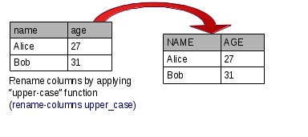

<div layout="column">
    <div>
        <md-button aria-label="Show/hide documentation" ng-click="switchShowUsage()"><i class="fa fa-angle-down"  >Show/hide documentation</i></md-button>
            <div ng-show = "showUsage">
                <p class="api-doc-docstring">Renames the columns in the dataset. Takes either a map or a function.</p> 
            
            </img>
        </div>
        </div>
        <div>
        <h3>Parameters</h3>
<md-button class="md-raised" ng-click="addRenameFunction()" aria-label="Compose with function">Compose with function</md-button>
<div layout="row"  ng-repeat="renameFunction in function.functionsToRenameWith track by $index ">
    <div layout="row">
        <md-button class="md-primary button-tight md-default-theme" ng-click="removeRenameFunction($index)" aria-label="Remove function">
            <i class="fa fa-trash fa-lg"></i>
        </md-button>
        <md-input-container> 
        <md-select ng-model="function.functionsToRenameWith[$index]" placeholder="{{function.functionsToRenameWith[$index] ? function.functionsToRenameWith[$index].name : 'Choose a function...'}}" ng-selected="{{renameFunction}}">
                    <md-optgroup label="Custom functions">
                        <md-option ng-repeat="customFunct in transformation.customFunctionDeclarations " value="{{customFunct.name}}">{{customFunct.name}}</md-option>
                    </md-optgroup>
                    <md-optgroup label="Prefixers">
                        <md-option  ng-repeat="prefixer in transformation.prefixers " value="{{prefixer.name}}">{{prefixer.name}}</md-option>
                    </md-optgroup>
                </md-select>
            </md-input-container>
    </div>


</div>
</div>
</div>
